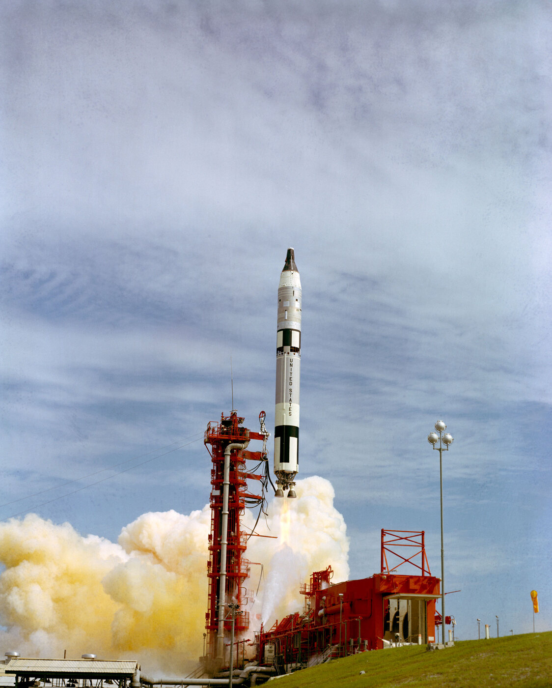
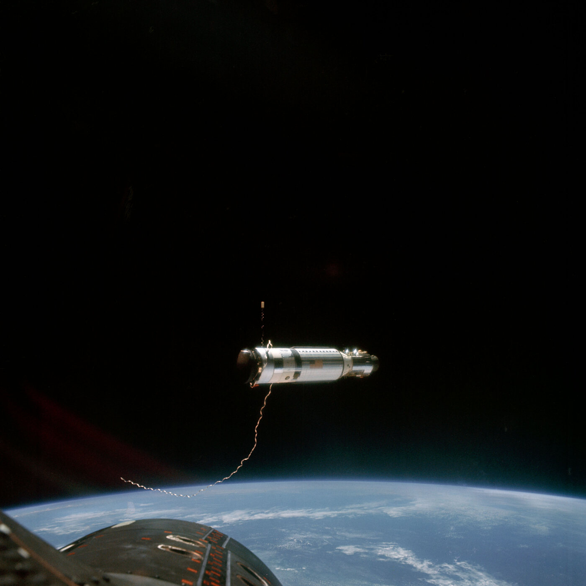

Gemini XI Launches from Cape Kennedy
The Florida mission that perfected first-orbit rendezvous, 1966
By Wm. E. McMullen II

September 12, 1966 — At 9:42 a.m., NASA launched Gemini XI from Launch Complex 19 at Cape Kennedy. Astronauts Charles “Pete” Conrad Jr. and Richard Gordon Jr. began a demanding three-day mission designed to master techniques that would soon be essential for landing astronauts on the Moon.
The mission's first challenge began before Gemini XI left Florida. An Atlas rocket launched an uncrewed Agena target vehicle from nearby Launch Complex 14. One hour and 37 minutes later, Gemini XI had to lift off within an extremely narrow window so that the two spacecraft could meet in orbit. Florida's launch crews placed both vehicles on their required trajectories with extraordinary precision.
Conrad and Gordon reached the Agena and docked only 94 minutes after liftoff. It was the first rendezvous and docking completed during a spacecraft's initial orbit. The achievement proved that astronauts departing the Moon in a lunar module could quickly meet a command module orbiting overhead.

A Record View of Earth
On September 14, the Agena's engine propelled the docked spacecraft to approximately 850 miles above Earth. Gemini XI thereby established a crewed Earth-orbit altitude record that still stands. Only astronauts traveling beyond Earth orbit on later Apollo missions flew farther from the planet.
The mission also tested whether two tethered spacecraft could produce artificial gravity. After separating from the Agena, the astronauts kept the vehicles connected by a 100-foot tether and slowly rotated them around one another. The resulting centrifugal force was extremely small, but it became the first demonstration of artificial gravity in space.
Gordon performed two periods of extravehicular activity, including a difficult spacewalk that revealed how exhausting even apparently simple work could be in weightlessness. On September 15, Gemini XI completed the first computer-controlled reentry by an American spacecraft and splashed down in the Atlantic near the recovery ship USS Guam.
Why It Matters to Florida
Gemini XI shows that Florida's Space Coast was not merely the place where rockets happened to launch. The precision work performed at Cape Kennedy made the mission's first-orbit rendezvous possible. Together with earlier Gemini flights, it developed the launch operations, spacecraft procedures and astronaut experience that enabled Apollo astronauts to reach the Moon less than three years later.
Sources for Additional Reading
- NASA — Gemini XI Mission — Official mission objectives, milestones, flight data and image gallery.
- NASA — Demanding Gemini XI Mission Flies on Top of the World — Detailed account of the launch, first-orbit rendezvous, altitude record and tether experiment.
Related: Gemini V Brings the Moon Closer
Related: Big Joe 1 Tests Mercury's Heat Shield
Also September 12: A National Day of Unity and Mourning
Explore the daily archive: Discover more events that shaped Florida's communities, culture and history.
Today in Florida History